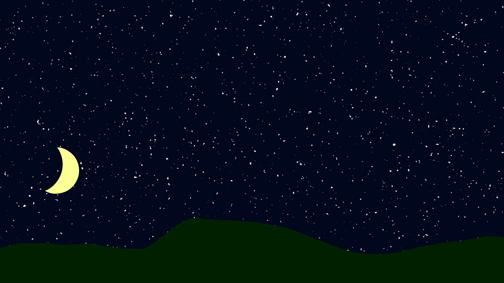

Adobe Animate project
A sunset and sunrise animation I made for the animation unit. I used motion tweens for animating the sun and moon and used shape tweens for animating the sky gradient fade. I used Photoshop to create a random pattern of stars.

Gradient for the sunset and sunrise

Photoshop used for the randomized stars in the sky